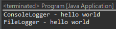

[Design pattern] 3-2. 責任の連鎖パターン(Chain of responsibility pattern)
こんにちは。明月です。
この投稿はデザインパターンの責任の連鎖パターン(Chain of responsibility pattern)に関する説明です。
責任の連鎖パターンとはクラス間に連結リストアルゴリズムを掛けて、特定な関数を実行すると連鎖的に実行するパターンということです。

Reference - https://en.wikipedia.org/wiki/Chain-of-responsibility_pattern
これがすごくよく使うパターンではないですが、ログ処理や一つの処理で様々な結果を同時に作成する時に使うパターンです。
#pragma once
#include <stdio.h>
#include <iostream>
using namespace std;
// Loggerインターフェース
class ILogger {
public:
// 抽象関数
virtual void write(const char* message) = 0;
~ILogger() {}
};
// LoggerManagerクラス
class LoggerManager : public ILogger {
private:
// 内部連結リストを作るためのインラインクラス
class Pointer {
public:
// Loggerオブジェクト変数
ILogger* logger;
// 次のポインタ変数
Pointer* next = nullptr;
// デストラクタ
~Pointer() {
// loggerをメモリから削除
delete logger;
}
};
// 連結リストポインタ変数
Pointer* first = nullptr;
Pointer* end = nullptr;
public:
// ログ作成関数(再定義)
virtual void write(const char* message) {
// 連結リストの頭ポインタ
Pointer* n = first;
// 連結リスト順番でループ
while (n != nullptr) {
// 登録されたLoggerにwrite関数を呼び出す
n->logger->write(message);
// 次のポインタに移動
n = n->next;
}
}
// Logger設定
void setLogger(ILogger* logger) {
// ポインタインスタンス生成
Pointer* p = new Pointer();
// Logger設定
p->logger = logger;
// もしリストのオブジェクトが0個ならfirstに格納
if (first == nullptr) {
first = p;
end = p;
return;
}
// オブジェクトが0個ではなかったら、リストを連結
end->next = p;
end = p;
}
// デストラクタ
~LoggerManager() {
// リストの頭オブジェクト
Pointer* d = first;
// 連結リスト順番でループ
while (d != nullptr) {
// swap
Pointer* b = d->next;
// ポインタ削除
delete d;
// swap
d = b;
}
}
};
// ConsoleLoggerクラス
class ConsoleLogger : public ILogger {
public:
// ログ作成(関数再定義)
virtual void write(const char* message) {
// コンソールに出力
cout << "ConsoleLogger - " << message << endl;
}
};
// FileLoggerクラス
class FileLogger : public ILogger {
public:
// ログ作成(関数再定義)
virtual void write(const char* message) {
// コンソールに出力
cout << "FileLogger - " << message << endl;
}
};
// 実行関数
int main() {
// LoggerManagerインスタンス生成
LoggerManager manager;
// ConsoleLoggerインスタンス追加
manager.setLogger(new ConsoleLogger());
// FileLoggerインスタンス追加
manager.setLogger(new FileLogger());
// ログ作成
manager.write("hello world");
return 0;
}
ソースコードを作成したら完全に連結リストのアルゴリズムになりました。連結リストのアルゴリズムをよく知っている方はよく目に入れると思いますが、アルゴリズムの分野が弱い方はすごく複雑に見える可能性がありますね。
内容は私がLoggerManagerにConsoleLoggerとFileLoggerのインスタンスを格納しました。そしてwrite関数を呼び出したら順番とおりにコンソールに出力されますね。
つまり、setLoggerの関数でインスタンスを格納した数程、write関数で連鎖的に出力するパターンです。
import java.util.LinkedList;
import java.util.List;
// Loggerインターフェース
interface ILogger {
// 抽象関数
void write(String msg);
}
// LoggerManagerクラス
class LoggerManager implements ILogger {
// 連結リスト変数
private List<ILogger> loggers = new LinkedList<>();
// Logger設定
public void setLogger(ILogger logger) {
// Logger追加
loggers.add(logger);
}
// ログ作成関数(再定義)
public void write(String msg) {
// listに追加されたLogger
for (var l : loggers) {
// write関数を呼び出す。
l.write(msg);
}
}
}
// ConsoleLoggerクラス
class ConsoleLogger implements ILogger {
// ログ作成(関数再定義)
public void write(String msg) {
// コンソールに出力
System.out.println("ConsoleLogger - " + msg);
}
}
// FileLoggerクラス
class FileLogger implements ILogger {
// ログ作成(関数再定義)
public void write(String msg) {
// コンソールに出力
System.out.println("FileLogger - " + msg);
}
}
// 実行関数クラス
public class Program {
// 実行関数
public static void main(String[] args) {
// LoggerManagerインスタンス生成
var manager = new LoggerManager();
// ConsoleLoggerインスタンス追加
manager.setLogger(new ConsoleLogger());
// FileLoggerインスタンス追加
manager.setLogger(new FileLogger());
// ログ作成
manager.write("hello world");
}
}

Javaには連結リストのLinkedListクラスがあります。つまり、Javaには連結リストが実装されているのでそれを使ったら良いでしょう。
もちろん、必ずLinkedListを使う必要なく、ArrayListでも構いません。つまり、責任の連鎖パターン(Chain of responsibility pattern)はポインターで連結すると言いますが、C/C++にもvectorオブジェクトを使っても実装することでは問題ないでしょう。
using System;
// Logger抽象クラス
abstract class ALogger
{
// 次のLoggerポインタプロパティ
protected ALogger Next
{
get; private set;
}
// 次のポインタのLogger設定
public ALogger SetNextLogger(ALogger logger)
{
// プロパティにインスタンス設定
Next = logger;
// インスタンスリターン
return logger;
}
// 次のインスタンスにWrite関数を呼び出す。
public virtual void Write(string data)
{
// 次のポインタがnullではなければ
if (Next != null)
{
// Write関数を呼び出す
Next.Write(data);
}
}
}
// ConsoleLoggerクラス
class ConsoleLogger : ALogger
{
// 関数再定義
public override void Write(string data)
{
// コンソールに出力
Console.WriteLine("ConsoleLogger - " + data);
// 次のポインタインスタンスの関数を呼び出す
base.Write(data);
}
}
// FileLoggerクラス
class FileLogger : ALogger
{
// 関数再定義
public override void Write(string data)
{
// コンソールに出力
Console.WriteLine("FileLogger - " + data);
// 次のポインタインスタンスの関数を呼び出す
base.Write(data);
}
}
// MailLoggerクラス
class MailLogger : ALogger
{
// 関数再定義
public override void Write(string data)
{
// コンソールに出力
Console.WriteLine("MailLogger - " + data);
// 次のポインタインスタンスの関数を呼び出す
base.Write(data);
}
}
// 実行クラス
class Program
{
// 実行関数
static void Main(string[] args)
{
// ConsoleLoggerインスタンス生成
var logger = new ConsoleLogger();
// SetNextLogger関数で順番とおりにFileLoggerインスタンスとMailLoggerインスタンス追加
logger.SetNextLogger(new FileLogger())
.SetNextLogger(new MailLogger());
// ログ作成
logger.Write("Hello world");
// 任意のキーを押してください
Console.WriteLine("Press Any key...");
Console.ReadLine();
}
}
LoggerManagerというクラスが必要なく、Loggerクラスに次のポインタを連結して最初に生成されたインスタンスの関数を呼び出すと連鎖的に実行する方法もあります。
責任の連鎖パターンはクラスの結合度を弱くして様々な応用にかなり良いパターンですが、以外に使用頻度が低いパターンです。適応する仕様が多くないからではないかな。
ほとんどファサードパターンとストラテジーパターンで解決される仕様が多いからかな
ここまでデザインパターンの責任の連鎖パターン(Chain of responsibility pattern)に関する説明でした。
ご不明なところや間違いところがあればコメントしてください。
- [Design pattern] 3-6. ステートパターン(State pattern)2021/11/17 20:04:47
- [Design pattern] 3-5. メメントパターン(Memento pattern)2021/11/16 20:01:36
- [Design pattern] 3-4. イテレータパターン(Iterator pattern)2021/11/15 19:31:28
- [Design pattern] 3-3. コマンドパターン(Command pattern)2021/11/05 17:01:42
- [Design pattern] 3-2. 責任の連鎖パターン(Chain of responsibility pattern)2021/11/04 19:27:58
- [Design pattern] 3-1. ストラテジーパターン(Strategy pattern)2021/11/03 18:38:52
- [Design pattern] 2-7. ファサードパターン(Facade pattern)2021/11/02 19:32:31
- [Design pattern] 2-6. プロキシパターン(Proxy pattern)2021/11/01 19:42:44
- [Design pattern] 2-5. フライウェイトパターン(Flyweight pattern)2021/10/29 19:48:27
- [Design pattern] 2-4. デコレーターパターン(Decorator pattern)2021/10/28 20:11:13
- [Design pattern] 2-3. ブリッジパターン(Bridge pattern)2021/10/27 20:32:21
- [Design pattern] 2-2. コンポジットパターン(Composite pattern)2021/10/27 20:30:54
- [C#] Redisのデータベースを接続して使い方2022/02/15 18:46:09
- [CentOS] Redisデータベースをインストールする方法とコマンドを使い方2022/02/14 18:33:07
- [Design pattern] 3-6. ステートパターン(State pattern)2021/11/17 20:04:47
- [Design pattern] 3-5. メメントパターン(Memento pattern)2021/11/16 20:01:36
- [Design pattern] 3-4. イテレータパターン(Iterator pattern)2021/11/15 19:31:28
- [CentOS] Linux環境(CentOS)でCassandra(NoSQL DB)をインストールする方法(DBeaverブラウザでNoSQL使い方)2021/11/12 17:33:58
- [Design pattern] 3-3. コマンドパターン(Command pattern)2021/11/05 17:01:42
- [Window] apache-tomcatでロードバランシング(Load balancing)する方法とセッションクラスタリング（セッション共有）2021/11/05 16:58:45
- [Window] Apacheでmod_jkとmod_proxyの差異、apacheでtomcatのwebsocketのプロキシフォーワードする方法2021/11/05 16:55:05
- [PHP] Apache環境の同じホスト中でPHPとJava(Servlet)を同時に起動、運用する方法2021/11/05 16:52:04
- [C#] 61. ウィンドウフォーム(Window form)でスレッド(Thread)を使い方、クロススレッド問題解決2021/11/04 19:29:51
- [Design pattern] 3-2. 責任の連鎖パターン(Chain of responsibility pattern)2021/11/04 19:27:58
- [Design pattern] 3-1. ストラテジーパターン(Strategy pattern)2021/11/03 18:38:52
- [C#] 60. ウィンドウフォーム(Window form)のイベント設定する方法2021/11/02 21:18:08
- [Design pattern] 2-7. ファサードパターン(Facade pattern)2021/11/02 19:32:31